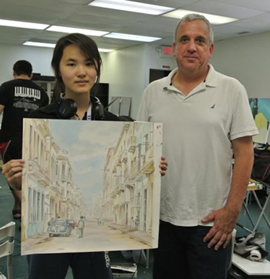

莎伦画院四学生获全美绘画十佳荣誉
美国＂Celebrating Art＂是一本专门收集出版K-12年级优秀学生作品的画册，每年分春、夏、冬三季出版。每一季再从获选作品中选出十佳(Top 10 winner)。莎伦画院学生两年前开始参赛，每一季画院的老师和主管都获得主编Tom Worthen博士的特别表彰，赞扬莎伦学生作品是他＂所见到的最为优秀的作品＂。Celebrating Art画册每一期的封面都以莎伦学生作品为主角。每季莎伦学生都入选十佳作品。最多一次同时有七位莎伦学生入选全美十佳。继2014年夏季画册93幅莎伦学生作品入选后，四位莎伦学生于感恩节再收到Celebrating Art编辑部的通知，他们的画作又获全美十佳。
徐欣雯(Michelle Xu )是北West Windsor高中12年级生，9岁到莎伦画院学画。2013年荣获美国Scholastic艺术大赛绘画金匙奖。2014年荣获新州农业厅土壤海报比赛高中组第一名及新州总冠军。此次，她的水彩画＂Morning＂荣获Celebrating Art夏季画册入选及Top 10 winner。这幅作品在莎伦暑期加强班完成时，正逢参议员D．Maskin到莎伦画院私人探访，当场想买下这幅作品，但徐欣雯不忍割爱，喜爱艺术收藏的议员就创作灵感与徐欣雯进行了愉快的长时间交谈。
吕思瑶(Nancy Lu )是新州Pingry School 私立高中9年级生，在莎伦画院习画五年。从随手涂鸦到今天充满满足感，每周五成为她最快乐的日子，因为可以上画画课！在竞争异常激烈的私立名校，她以出类拔翠的美术专长成为全校瞩目的＂明星＂。

吕思瑶在2011全美创意治疗故事年历绘画比赛中获得Outstanding Winning Artist 的荣誉，作品被印制成年历，在全美的医院、诊所、学校、艺术馆等发放。今年的全美皇家艺术绘画比赛，她取得了第二名的好成绩。2014全美 Celebrating Art 春季版画册，她的油画作品 “The City of Lights" 获“High Merit”奖并出版。又一幅油画作品“A Mountain Gateway"获2014全美Celebrating Art 夏季版画册出版，并获 Top 10 winner。风景作品都是她在初中画的旅行景色。
吕思瑶在今年的莎伦暑期加强营中，以自己及亲友为肖像系列，风格一如她的性情：平和温婉，真诚坦然。在写实中揉和浪漫主义情愫。技巧扎实、笔触轻松。深入观察与刻画的同时，尝试表达高于实体以外的精神思考。
张欣怡(Xinyi Christine Zhang )是新州南布朗斯维克Monmouth Junction小学四年级的学生。爱好广泛，在绘画和语言方面尤具天赋，一手写诗，另一手作画，自编自制书画册。6岁到莎伦画院学画，寒暑假从未间断。她从画画里体会到极大的成就和自豪感。小学的同学以能得到她的画作为骄傲，教室的布告栏和海报设计，都由她来领导创作。三年级的学校作品“猫头鹰”从三百多幅作品中脱颖而出，成为唯一代表学校的作品入选为学区年历。
张欣怡在2013国际青少年艺术交流绘画比赛中获得优胜奖，作品作为文化交流永久陈列在交流国家的博物馆中。2012Celebrating Art夏季版画册，欣怡的油彩画作品 “ Moonlight Water Lily” 被出版。这次她的水彩画” Riverside Mill” 获2014 Celebrating Art夏季画册出版并获 Top 10 winner。是她在今年莎伦暑假加强班中创作的。暑期加强班大哥哥、大姐姐们的天马行空的创意，激发她更新眼界和丰富的创作思源。她和妈妈都很庆幸平时在莎伦画院学画，暑期又加上6周加强班，技巧和创意收获极大。同时又有时间参加了好几个绘画比赛。她已经立下目标，长大要成为一位杰出的动画设计师。
印度裔的 Pranav Sitaraman今年8岁。是新州爱迪生MLK 小学3年级学生，在莎伦画院学画仅一年。这是他第一次参加绘画比赛，不但作品被选入夏季画册出版，还被选为全美Top 10 winner。他高兴地表示，获得＂特别的第一次＂要＂感谢莎伦画院的老师们教会我很多不同的绘画技巧。＂
(2014)